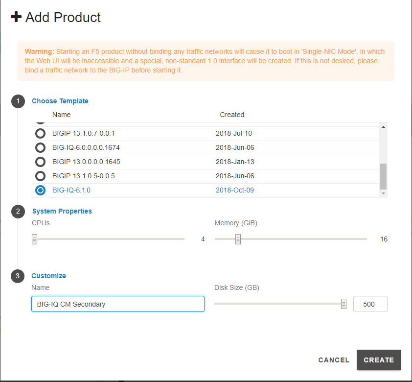
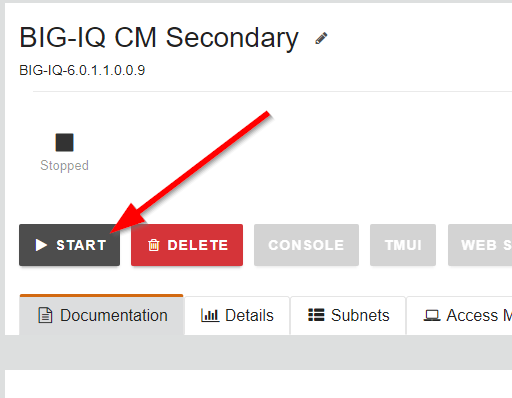
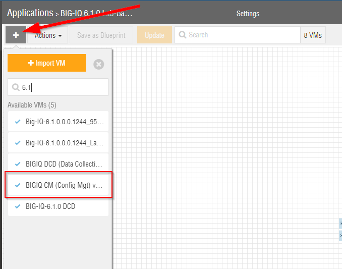
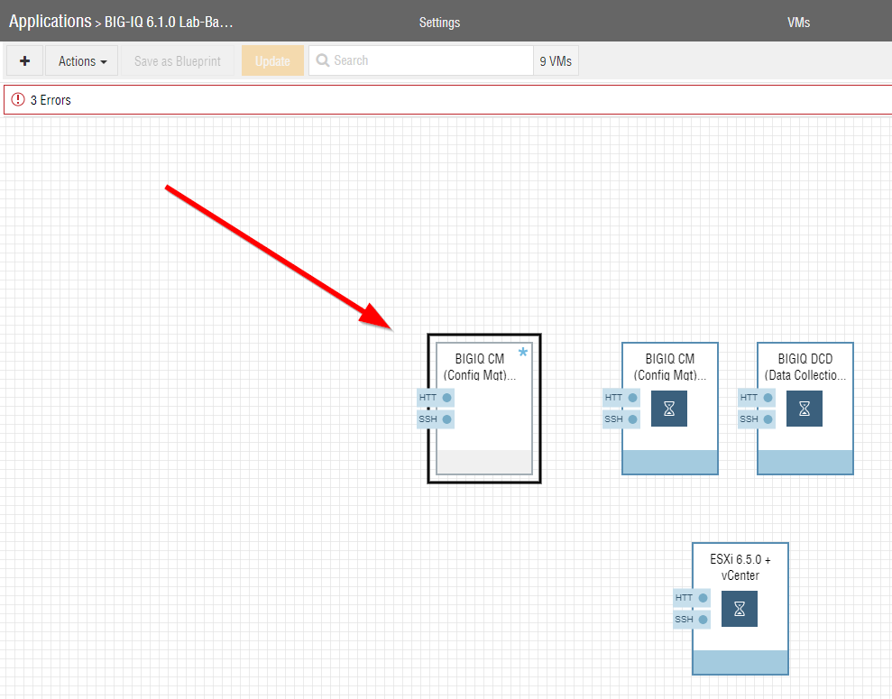

F5 BIG-IQ & Cloud Edition Lab > Class 4: BIG-IQ Platform > Module 4: BIG-IQ HA Source | Edit on
Lab 4.1: Configure High Availability for BIG-IQ (6.1 and before)¶
Add a peer BIG-IQ system for a high availability configuration
Before you can set up F5 BIG-IQ Centralized Management in a high availability (HA) pair, you must have two licensed BIG-IQ systems.
For the high-availability pair to synchronize properly, each system must be running the same BIG-IQ version, and the clocks on each system must be synchronized to within 60 seconds. To make sure the clocks are in sync, take a look at the NTP settings on each system before you add a peer.
Configuring BIG-IQ in a high availability (HA) pair means that you can still manage your BIG-IP devices even if one BIG-IQ systems fails.
Lab:
Let’s first add a BIG-IQ CM image in the blueprint.
In UDF:
In the F5 Products column, click on ADD
{kind=link}
Select approriate release of BIG-IQ (same as the existing active BIG-IQ part of the blueprint) and set the following values for CPU/Memory/Disk:
vCPUs: 4
Memory: 16 GiB
Disk Size: 500 GiB
Click on CREATE.
{kind=link}
After few minutes, the VM is created in UDF. Click on the new VM, go to the Subnets tab and bind additional interfaces (External and Internal).

Finally, start the new BIG-IQ.
{kind=link}
In Ravello:
In the top left, click on the + sign and search for BIG-IQ 6.1 CM VM image.
{kind=link}
Add the image into the deployment.
{kind=link}
Got to the network tab and fix the IP addresses using 10.1.1.13, 10.1.10.13 and 10.1.20.13. Click on Update
{kind=link}
Then, start the new BIG-IQ CM VM.
Connect via
SSHto the system Ubuntu Lamp Server.Request 1 BIG-IQ Evaluation license and set it in the inventory file in
bigiq_onboard_license_keyvariable (Ravello only).# cd /home/f5/f5-ansible-bigiq-onboarding # vi inventory/group_vars/udf-bigiq-cm-02.yml
Note
Double check the IP address of the new secondary BIG-IQ and update it in udf-bigiq-cm-02.yml if necessary (bigiq_onboard_server)
Once the new VE is full up and running, execute the following script to onboard this new secondary BIG-IQ CM.
# cd /home/f5/f5-ansible-bigiq-onboarding # ./cmd_bigiq_onboard_secondary_cm.sh nopause
Verify the new secondary BIG-IQ CM has been correclty configured (check hostname, self IP, VLAN, NTP, DNS, license)

Open active BIG-IQ, go to System > BIG-IQ HA and Click the Add Secondary button.

Type the properties for the BIG-IQ system that you are adding and click the Add button at the bottom of the screen.
In the IP Address field, type the IP address for the secondary BIG-IQ system.
In the Username and Password fields, type the administrator’s user name and password for the new BIG-IQ system.
In the Root Password field, type the root password for the new BIG-IQ system.

Then, click OK.

The BIG-IQ system synchronize. Once they are finished, both appear as ready (green).